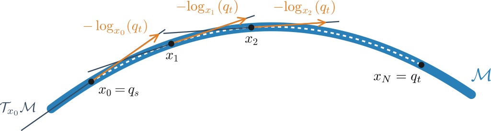
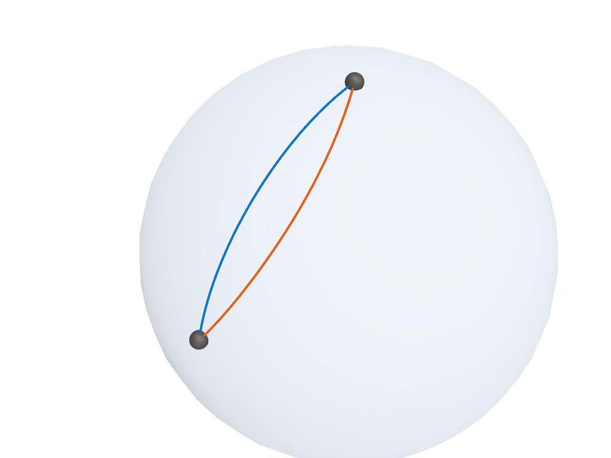

Discrete Geodesic Interpolation#
discrete_geodesic approximates the shortest path from a start \(q_s\) to a target
\(q_t\) on a manifold \(\mathcal{M}\) as a sequence of points. It works under any
metric, including the kinetic-energy and clearance metrics, whose geodesics do not have a
closed form. The planner uses it for its edges when interp is "riemannian_geodesic",
and under "auto" when the manifold’s geodesic does not follow the metric (see
Planning). This page describes the algorithm and its settings, and runs it on the
sphere under two metrics.
Problem statement#


discrete_geodesic minimizes the squared Riemannian distance to the target,
with Riemannian gradient steps from \(x_0 = q_s\). Every accepted step adds a point to the path, and the points of a converged walk approximate the geodesic from \(q_s\) to \(q_t\).
How the algorithm works#
Each iteration computes a descent direction in \(\mathcal{T}_x\mathcal{M}\), scales it to the current step cap, and moves along it with the manifold’s retraction.
Fast path#
When the manifold’s log is the Riemannian logarithm of the metric in use, the gradient of
\(\varphi\) has a closed form [1],
The fast path steps along \(\log_x(q_t)\), scaled to the step cap. Each step costs one
log, one retract and a progress check.
is_riemannian_log(m) returns whether the fast path applies. It reads the compile-time
trait M::has_riemannian_log or the run-time hook m.has_riemannian_log_runtime(). For
the built-in manifolds, it returns true for
EuclideanandToruswith the identity metric,Spherewith the round metric and the exponential map,SO2with unit weight andSO3with equal weights,SE2with the Euler retraction and equal translational weights,a
Productwhose every factor returnstrue.
It returns false for SE2 and SE3 with their group exponentials and for every
ConfigurationSpace. These take the finite-difference path below.
force_log_direction = true steps along \(\log_x(q_t)\) under every metric and takes a
finite-difference step only when a log step fails its checks. The metric still sets the step
lengths and the stopping test, and the path follows the geodesic of the retraction instead of
the geodesic of the metric.
Finite-difference path#
When log is not the Riemannian logarithm of the metric, or when a fast-path step fails its
checks, the iteration computes a natural gradient by finite differences. This is the case for
a non-identity ConstantSPDMetric, KineticEnergyMetric, JacobiMetric,
PullbackMetric and callable metrics.
Build an orthonormal tangent basis \(\{e_i\}\) at the current point. A manifold with a
projectmethod projects ambient seed vectors to \(\mathcal{T}_x\mathcal{M}\) before Gram-Schmidt orthonormalization.Assemble the metric tensor in this basis, \(G_{ij} = g_x(e_i, e_j)\). A metric with
inner_matrixfills the whole matrix at once.Estimate the gradient \(g_i = \partial_{e_i} \varphi(x)\) by central finite differences along each basis direction. Each sample of \(d_g^2\) uses a third-order midpoint estimate of the distance [2]. When the estimate deviates from the midpoint identity \(\log_m(a) = -\log_m(b)\) by more than the relative tolerance
fd_midpoint_guard_tau, both samples of that basis direction use \(\|\log_a(b)\|_g\) instead, andfd_midpoint_fallbackscounts the direction.Solve \(G\,\alpha = -g\) by Cholesky. The natural gradient in ambient coordinates is \(v = \sum_i \alpha_i\, e_i\).
discrete_geodesic chooses between the two paths at every step, and one walk can mix
both.
Adaptive step control and termination#
A retraction only approximates the exponential map. On a curved manifold, a long step can
overshoot the target or move a different length than requested. After each step, the
algorithm measures its length \(\|\log_x(x_{\text{next}})\|_g\). It accepts the step
when the step moves closer to the target and its length is at most distortion_ratio
times the requested length.
A rejected fast-path step is tried again as a finite-difference step of the same length.
A rejected finite-difference step reduces the step cap by a factor of two.
After an accepted step, the cap grows by
growth_factor, up tostep_size.
The walk ends with one of the following statuses.
ConvergedThe distance to the target, \(\|\log_x(q_t)\|_g\), dropped below
convergence_tolor belowconvergence_reltimes the initial distance. The path ends at or very close totarget.MaxStepsReachedThe walk used
max_stepsaccepted steps without reaching the target.final_distanceis the remaining distance.GradientVanishedThe Riemannian gradient norm fell below
gradient_epsaway from the target. Check the metric and the finite-difference step.CutLocuslogreturned a zero vector at a point other than the target, as for antipodal points on the sphere.StepShrunkToZeroThe step cap fell below
min_step_size, where the retraction and the metric disagree strongly.DegenerateInputstartandtargetwere equal at entry.
The result also counts the work. iterations is the number of accepted steps, one less
than the number of points. distortion_halvings counts the reductions of the step cap. On
the fast path, a nonzero count marks a region where the retraction and the metric disagree.
fd_midpoint_fallbacks counts the basis directions whose finite-difference samples the
midpoint check rejected.
Tuning the parameters#
Every parameter is a field of InterpolationSettings. The defaults suit moderate problems on
the unit sphere. For smaller spaces or heavier metrics, lower step_size and raise
max_steps.
Parameter |
Default |
Effect |
|---|---|---|
|
0.5 |
Maximum Riemannian step per iteration. Consecutive points of the path are at most
|
|
1e-4 |
Absolute stop threshold on the distance to the target. |
|
1e-3 |
Relative stop threshold. The walk also stops when the distance drops below
|
|
100 |
Accepted steps before the walk stops. Rejected steps do not count. |
|
false |
Step along \(\log_x(q_t)\) under every metric (see Fast path). Use it for a smooth path when the finite-difference walk oscillates. |
|
0.0 |
Central finite-difference step. 0 selects \(\max(10^{-8},\, 10^{-5} \cdot \max(1, d_0))\) from the initial distance \(d_0\). |
|
0.25 |
Relative deviation above which a finite-difference sample uses \(\|\log\|_g\) instead of the midpoint estimate. Lower values are stricter, and 0 uses \(\|\log\|_g\) for every sample. |
|
1.5 |
Largest ratio of the realized to the requested step length. Lower it for retractions that drift far from the exponential map. |
|
1.5 |
Growth of the step cap after an accepted step. |
|
1e-12 |
Floor on the step cap. The walk stops with |
|
1e-12 |
Riemannian norm below which the gradient counts as vanished. |
|
1e-10 |
Norm of \(\log_{q_s}(q_t)\) below which distinct endpoints count as a cut-locus pair. |
In a loop of many calls, pass an InterpolationCache to reuse the basis, the metric tensor
and the gradient buffers. The cache sizes itself on first use and does not allocate after
that.
A worked example on \(\mathbb{S}^2\) with an anisotropic metric#
The example runs discrete_geodesic twice on the unit sphere, from the north pole to a point
in the upper hemisphere. The first run uses the round metric, takes the fast path and follows
the great circle. The second run uses the constant SPD metric
\(A = \mathrm{diag}(25, 1, 1)\), under which motion along \(x\) costs five times as
much, and takes the finite-difference path.
import numpy as np
import geodex
start = np.array([0.0, 0.0, 1.0])
target = np.array([np.sin(1.3) * np.cos(0.5), np.sin(1.3) * np.sin(0.5),
np.cos(1.3)])
settings = geodex.InterpolationSettings(step_size=0.05, max_steps=500)
# 1. The round sphere takes the fast path and traces the great circle.
round_sphere = geodex.Sphere()
great = geodex.discrete_geodesic(round_sphere, start, target, settings)
# 2. An anisotropic constant SPD metric takes the finite-difference path.
A = np.diag([25.0, 1.0, 1.0])
stretched = geodex.ConfigurationSpace(round_sphere, geodex.ConstantSPDMetric(A))
bent = geodex.discrete_geodesic(stretched, start, target, settings)
print(great.status.name, len(great.path), bent.status.name, len(bent.path))
Full example: examples/concepts/discrete_geodesic.py
#include <cmath>
#include <cstdio>
#include <geodex/geodex.hpp>
int main(int argc, char** argv) {
const Eigen::Vector3d start(0.0, 0.0, 1.0);
const Eigen::Vector3d target(std::sin(1.3) * std::cos(0.5),
std::sin(1.3) * std::sin(0.5), std::cos(1.3));
geodex::InterpolationSettings settings;
settings.step_size = 0.05;
settings.max_steps = 500;
// 1. The round sphere takes the fast path and traces the great circle.
geodex::Sphere<> round_sphere;
auto great = geodex::discrete_geodesic(round_sphere, start, target, settings);
// 2. An anisotropic constant SPD metric takes the finite-difference path.
const Eigen::Matrix3d A = Eigen::Vector3d(25.0, 1.0, 1.0).asDiagonal();
geodex::ConfigurationSpace stretched{round_sphere,
geodex::ConstantSPDMetric<3>{A}};
auto bent = geodex::discrete_geodesic(stretched, start, target, settings);
std::printf("%s %zu %s %zu\n", geodex::to_string(great.status), great.path.size(),
geodex::to_string(bent.status), bent.path.size());
return 0;
}
Full example: examples/concepts/discrete_geodesic.cpp
It prints Converged 27 Converged 89, the status and the number of points of each path.

The blue curve is the great circle of the round metric. The orange curve is the walk under \(A = \mathrm{diag}(25, 1, 1)\). It has the same endpoints and bends away from the great circle to move less along \(x\), where motion costs five times as much. Drag to orbit, and use the controls to pause the balls or move them along the paths.
Common pitfalls#
Warning
An anisotropic metric with a retraction other than the exponential map, such as
SphereProjectionRetraction, relies on the distortion check. Keepdistortion_ratioat 2 or below unless you have measured the retraction in your neighborhood.Near-antipodal endpoints on the sphere can end with
CutLocus, where the descent direction is not defined. Split the query at an intermediate point to cross the cut locus.Check
result.statusbefore usingresult.path. AfterMaxStepsReached, the last point of the path is not the target.On SE(2) under an anisotropic or clearance metric, the finite-difference natural gradient follows small variations of the metric between samples, and the path can come out bumpy. For a smooth path, set
force_log_direction = true. A nonzerofd_midpoint_fallbackson the finite-difference walk marks where the midpoint check fired.
See also#
Concept Hierarchy and Architecture for the policy types that
discrete_geodesicuses.geodex Basics for end-to-end use of the library.
C++ and Python for the reference of
discrete_geodesic,InterpolationSettings,InterpolationResultandInterpolationCache.
References#
Kyaw and Kelly describe the algorithm in full [2].